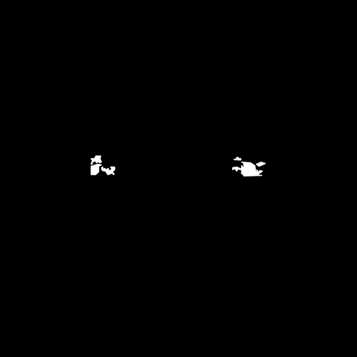
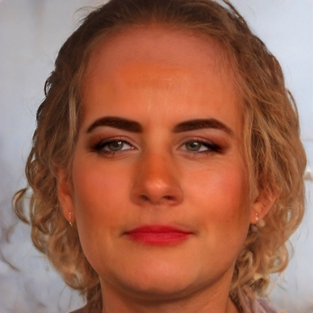
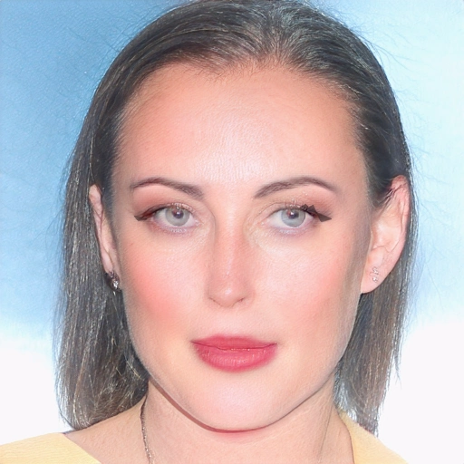

APS-52 · Oráculo de contornos múltiplos 16 identidades holdout usadas exclusivamente para ajustar parâmetros do ORÁCULO com acesso ao teacher: NÃO é teste de generalização. Contornos poligonais simplificados, até 3 por olho, pigmento fixo e opacidade por região; fora do contorno o MVP permanece idêntico. Gate de realismo ainda depende de inspeção visual.
01 · SFHQ_pt3_00001690 · ganhos ROI: 17.79%, 1.01% Fonte Teacher corrigido MVP aprovado Contornos preenchidos Máscara geométrica oracular 02 · SFHQ_pt3_00002799 · ganhos ROI: 0.76%, 4.54% Fonte Teacher corrigido MVP aprovado Contornos preenchidos Máscara geométrica oracular 03 · SFHQ_pt3_00005043 · ganhos ROI: 2.59%, 0.00% Fonte Teacher corrigido MVP aprovado Contornos preenchidos Máscara geométrica oracular 04 · SFHQ_pt3_00005983 · ganhos ROI: 1.35%, 6.79% Fonte Teacher corrigido MVP aprovado Contornos preenchidos Máscara geométrica oracular 05 · SFHQ_pt3_00006549 · ganhos ROI: 1.53%, 7.95% 06 · SFHQ_pt3_00006969 · ganhos ROI: 0.00%, 23.82% Fonte Teacher corrigido MVP aprovado Contornos preenchidos Máscara geométrica oracular 07 · SFHQ_pt3_00007250 · ganhos ROI: 19.13%, 20.09% Fonte Teacher corrigido MVP aprovado Contornos preenchidos 
Máscara geométrica oracular 08 · SFHQ_pt3_00007369 · ganhos ROI: 6.08%, 0.83% Fonte Teacher corrigido MVP aprovado Contornos preenchidos Máscara geométrica oracular 09 · SFHQ_pt3_00007455 · ganhos ROI: 12.23%, 5.67% 10 · SFHQ_pt3_00008011 · ganhos ROI: 1.00%, 3.68% Fonte Teacher corrigido MVP aprovado Contornos preenchidos Máscara geométrica oracular 11 · SFHQ_pt3_00009903 · ganhos ROI: 9.94%, 1.50% Fonte Teacher corrigido MVP aprovado Contornos preenchidos Máscara geométrica oracular 12 · SFHQ_pt3_00010706 · ganhos ROI: 0.00%, 0.00% Fonte Teacher corrigido 
MVP aprovado Contornos preenchidos Máscara geométrica oracular 13 · SFHQ_pt3_00011801 · ganhos ROI: 4.22%, 9.08% Fonte Teacher corrigido MVP aprovado 
Contornos preenchidos Máscara geométrica oracular 14 · SFHQ_pt3_00011865 · ganhos ROI: 0.00%, 0.00% Fonte Teacher corrigido MVP aprovado Contornos preenchidos Máscara geométrica oracular 15 · SFHQ_pt3_00012896 · ganhos ROI: 18.24%, 15.89% Fonte Teacher corrigido MVP aprovado Contornos preenchidos Máscara geométrica oracular 16 · SFHQ_pt3_00013292 · ganhos ROI: 15.04%, 13.53%